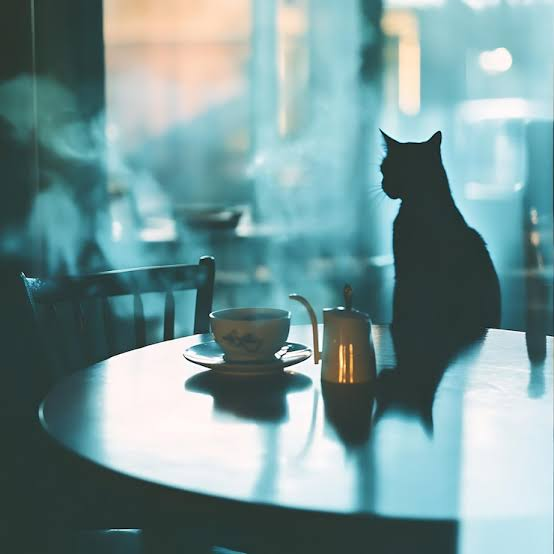
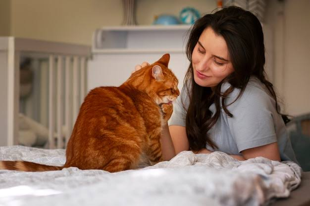
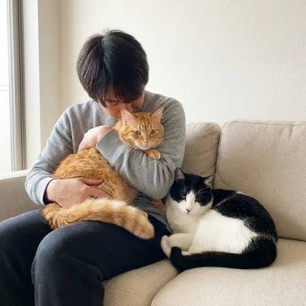
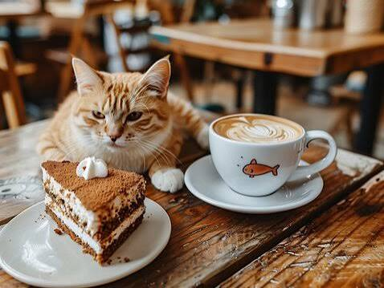
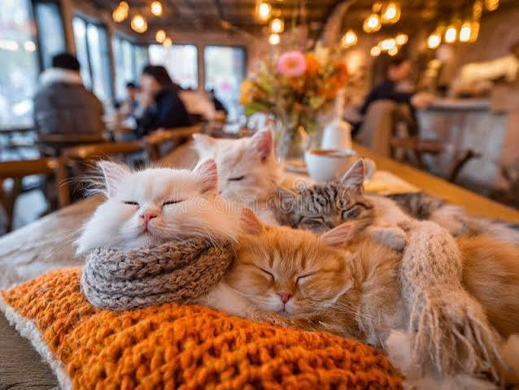

Whiskers & Brews – Dublin
A cosy café concept for coffee lovers and relaxed afternoons with fellow cat enthusiasts.
Perfect for: Coffee and friendly chats.
A little place for everyone who loves cats
Connect • Share • Care
Every cat deserves a safe and loving home. Discover helpful advice about cat sitting, fostering rescue cats and connecting with other cat lovers across Ireland.
Need someone to care for your cat while you're away?

Cat sitting means looking after someone's cat for a short period, such as a day, weekend or holiday. Many cats feel more comfortable staying in their familiar home.
A cat sitter may provide food and fresh water, clean the litter tray, play with the cat and offer company.
Fostering means temporarily caring for a rescued or shelter cat until a permanent adoptive home is found. Foster carers provide a safe and patient environment where cats can rest and become more confident.

Discover welcoming places for cat lovers to meet, chat and enjoy time together.

A cosy café concept for coffee lovers and relaxed afternoons with fellow cat enthusiasts.
Perfect for: Coffee and friendly chats.

A charming bakery concept where cat owners can share stories over a delicious treat.
Perfect for: Weekend treats.
A peaceful garden concept with sheltered seating and a nature-inspired atmosphere.
Perfect for: Relaxing outdoors.

A community hub concept for meetups, adoption awareness and advice exchanges.
Perfect for: Community meetups.
Neighbours can support one another by sharing requests and offering help.
"I'm going away for the weekend and would appreciate help with feeding and keeping my cat company."
"I work from home and would be happy to help local cat owners with visits and playtime."
"A gentle rescued cat needs a calm temporary home while the rescue team finds a permanent family."
"I have travelled with my cat and can share tips about carriers and preparation."
Cat sitting is usually short-term care for an owner's pet while they are away. Fostering is temporary care for a rescued cat until a permanent home is found.
Not every rescue organisation requires previous experience. Patience, a safe environment and willingness to follow professional advice are important.
Rules vary between venues and transport operators. Always check their current pet policies before travelling. Visit our Travel Hub for more preparation tips.
Use our community contact form to describe your county and whether you are offering or requesting help.
Whether you offer a helping hand, foster a rescued cat, share advice need someone to look after your cat while you're away, or are new to cat care, you are always welcome in our community.
Get in Touch